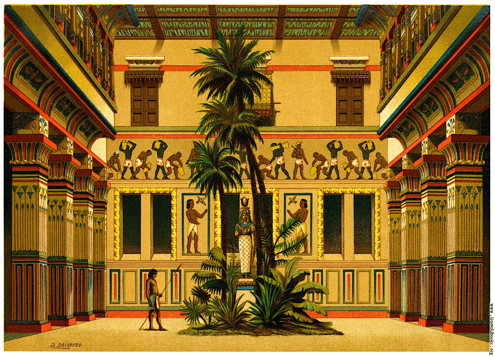

In the past, interiors were put together instinctively as a part of the process of building.[1]
The profession of interior design has been a consequence of the development of society and the complex architecture that has resulted from the development of industrial processes.
In ancient India, architects would also function as interior designers. This can be seen from the references of Vishwakarma the architect—one of the gods in Indian mythology. In these architects' design of 17th-century Indian homes, sculptures depicting ancient texts and events are seen inside the palaces, while during the medieval times wall art paintings were a common feature of palace-like mansions in India commonly known as havelis. While most traditional homes have been demolished to make way to modern buildings, there are still around 2000 havelis[2] in the Shekhawati region of Rajashtan that display wall art paintings.
In ancient Egypt, "soul houses" (or models of houses) were placed in tombs as receptacles for food offerings. From these, it is possible to discern details about the interior design of different residences throughout the different Egyptian dynasties, such as changes in ventilation, porticoes, columns, loggias, windows, and doors.[3]
Throughout the 17th and 18th century and into the early 19th century, interior decoration was the concern of the homemaker, or an employed upholsterer or craftsman who would advise on the artistic style for an interior space. Architects would also employ craftsmen or artisans to complete interior design for their buildings.
